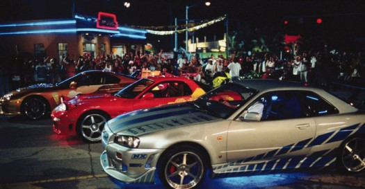

How to make a Street Racing Car
A street racing car is a car that is legal to drive on the street but has been modified to increase performance. People who modify their cars to increase performance test their cars out on legal racing courses. Here are some ways that you can modify your car to better suit your racing needs.
- Increase the car's airflow.
To increase a car's airflow, the stock intake, exhaust and headers of a car are exchanged for aftermarket parts. The stock options are restrictive for convenience reasons, usually because of sound and economics. Aftermarket parts increase the airflow to and from the engine and as a result increase horsepower. - Upgrade the car's stock suspension.
Stock suspension car be upgraded to more performance oriented after market options by changing the sway bars, installing strut bars and changing the springs to a stiffer variety. All of these upgrades stiffen the car and prevent car lean during cornering. - Switch the stock tires for performance tires.
Stock tires are designed to be economic. This makes them last longer but at the cost of having less friction. When a car is stiffed with suspension upgrades, all the force during cornering is transferred to the tires. Performance tires provide more friction and slip at much higher speeds than the stock tires. - Install forced induction on your engine.
Turbochargers and superchargers compress the air before it flows into the combustion chamber. The more airflows into the engine, the more horsepower it will produce. Turbochargers and superchargers can drastically improve a car's horsepower. - Lighten the car.
A lighter car is faster and more responsive. Take out the back seats. Switch out the stock hood and trunk for a carbon fiber aftermarket part. Change the stock rims to a lighter aftermarket option.